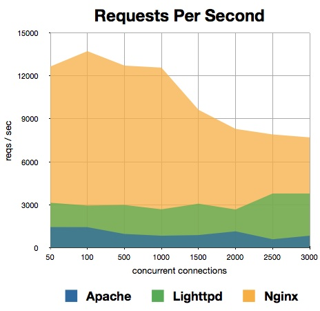
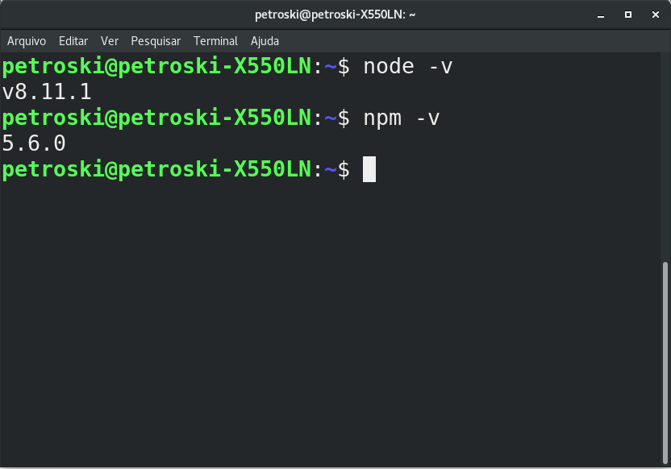
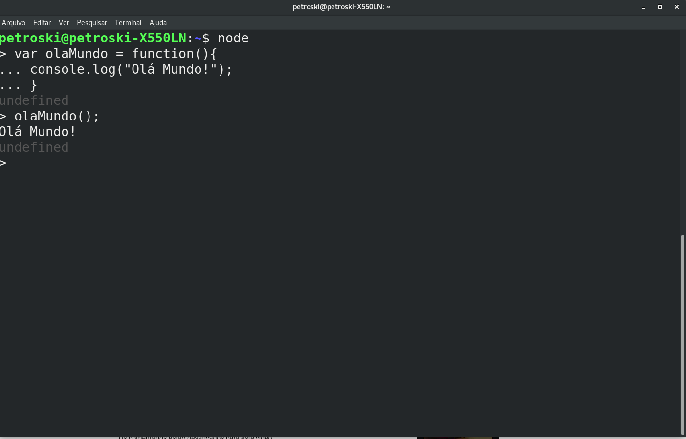
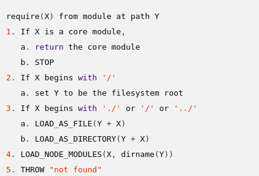

Desenvolvimento Web com JavaScript
Uma abordagem
Especialização em: DESENVOLVIMENTO WEB, CLOUD E DISPOSITIVOS MÓVEIS
Professor: Luiz Pedro Petroski
Formação
- Graduação: Engenharia de Computação (UEPG)
- Pós-Graduação: MBA em Gestão de TI (Faculdade Sant'ana)
- Mestrado: Computação Aplicada (UEPG)
Profissional
- Professor (Fateb)
- Professor Ensino técnico
- Gestor de TI no NUTE@D (UEPG)
- Fundador e CIO da PiSigma (Eventos científicos e Educação a distância)
Ementa da Disciplina
- Introdução ao NodeJS
- Repositório Online NPM
- Módulos
- Servidores
- I/O Síncrono
- Express
- Mongoose
Avaliação:
| Participação nas aulas 11 e 12/05 | 1,0 ponto |
| Participação nas aulas 25 e 26/05 | 1,0 ponto |
| Atividade LearnNode | 3,0 pontos |
| Projeto Final | 5,0 pontos |
Node JavaScript
O Node ampliou quase Universalmente o uso da linguagem JavaScript, e possibilitou explorar os seus recursos de forma mais efetiva
A linguagem mais Popular!!!
- JavaScript
- Java
- Python
- PHP
- C#
Qual a razão dessa Popularidade?
- Expansão da WEB
- Redes Móveis
- Tecnologia acessível
- Poder de processamento e recursos no lado do cliente:
HTML5: Geolocalização, storage, notification, web socket...
Qual a linguagem para manipular essas APIs?
Browsers

Amor / Ódio
Alguém aqui odeia JavaScript?
Boa parte dos problemas tem relação com a DOM
Problemas de compatibilidade
Falta de padronização e briga dos grandes players do mercado
DOM
Ou Document Object Model, foi padronizado pela W3C em 1998 para representar documentos escritos em HTML, XHTML e XML.
Por meio dessa API, é possível acessar e manipular qualquer informação do documento
Você costuma ler o manual de instruções?
Exemplo:
Como você usa o seu formo Micro-Ondas?
“A linguagem JavaScript é a única que as pessoas acham que não precisam aprender antes de começar a utilizar.”
(Douglas Crockford)
Revisão JavaScript
Origens
Foi inspirada pela linguagem HiperTalk
Desnvolvida pela Apple para a plataforma Hiper Card
Liguagem Simples e amigável
Idéia de implementar um conceito semelhante no browser
Contratou o Brendan Eich
Ele utilizou como base as linguagens Java, Scheme, Self e algunas influencias de Perl
Nascimento do JavaScript
Surgiu no Netscape Navigator 2.0 beta
Gerra dos Browsers
Junção com a Sun Microsystems e foi criado o JavaScript
Microsoft para nao ficar para trás criou o JScript
Para encurtar a história...
Para não perder para a gigante Microsoft a netscape busca padronizar (W3C e ISO)
E em 1997 Junto a ECMA Internacional foi registrado padronizado a linguagem
O nome correto é ECMAScript
Características
- Interpretada
- Orientação a objetos baseada em protótipos (não possui classes)
- Tipagem fraca
- Funções de primeira classe
- Atualmente está na versão 8
Declaração de variáveis
As variáveis devem ser declaradas pela palavra reservada var seguida do identificador
- Deve começar por letra, $ ou _
- Após a primeira letra pode conter números
- Por convenção, começa com letra minúscula e usa camelCase
- case-sensitive
Exemplos
var curso="DESENVOLVIMENTO WEB COM JAVASCRIPT";
var notas=[80, 90, 70];
var $scopo = {title: "JavaScript", version: "6"};
var _nome = "Luiz";
var codigoSecreto = 8732678632;
var a=40, b=9, c=4;
var teste;
Number
- Não tem int, double, long, é todo number
- IEEE-754 (Standart for Floating-Point)
- binary64 ou Double precision
- Excecções!
- Math API
String
Sequencia de 0 ou mais caracteres
Strings são imutáveis
Podem ser declaradas com aspas simples ou dupas
string API
boolean
Pode assumir o valor true ou false
Cuidado com os valores truty e falsy
| !!0 | !!NaN | !!'' | !!false | !!null | !!undefined |
todos os demais são truty por padrão
Diferenças entre undefined e null
O tipo undefined é retornado caso uma propriedade de um objeto seja consultada e não exista
O tipo null indica a ausência de valor em uma determinada propriedade já existente
Object
Objeto é uma coleção dinâmica de chaves e valores de qualquer tipo de dado
É possível adicionar ou remover propriedades a qualquer momento
Exemplo
var pessoa = {};
Exemplo
var pessoa = {
nome: "João",
idade: 20,
};
Exemplo
var pessoa = {
nome: "João",
idade: 20,
telefone: null,
};
Exemplo
var pessoa = {
nome: "João",
idade: 20,
telefone: null,
endereco: {
logradouro: "Rua dos Bobos",
numero:0,
bairro: "Centro"
}
};
Exemplo
var pessoa = {};
pessoa.nome="João";
pessoa["nome"] = 'João';
pessoa.endereco.bairro="Centro";
pessoa["endereco"]["bairro"]="Centro";
pessoa.endereco["logradouro"]="Rua dos bobos";
pessoa.cor dos olhos = "Azul";
pessoa["cor dos olhos"] = "Azul";
Exemplo
delete pessoa.idade;
var pessoa = new Object();
var pessoa = Object.create(...);
A linguagem JavaScript nao tem!
- Classe
- Construtor
- Método
- Módulo
Mas tem Função!!!
Uma função é um objeto que contém um bloco de código executável.
O bloco é isolado!!
Função de primeira classe: Pode ser atribuída a uma variável, passada como parâmetro ou retornada por outra função.
Function Declaration
function soma(a, b){
return a+b;
}
soma(1, 3);
Function Expression
var soma = function(a, b){
return a+b;
}
soma(1, 3);
Named Function Expression
var soma = function soma(a, b){
return a+b;
}
soma(1, 3);
Formas de invocar uma função
- Invocando diretamente
- passado por parâmetro
- Retornando uma função
- Invocando função por meio de um objeto
- call e apply
Invocando diretamente
var soma = function soma(a, b){
return a+b;
}
soma(1, 3);
Passando por parâmetro (lambda)
var produto = {nome: 'Sapato', preco: 150};
var formulaImpostoA=function (preco){return preco*0,1;};
var calculaPreco = function(produto, formulaImposto){
return produto.preco+formulaImposto(produto.preco);
}
Retorno de uma função
var var helloworld = function (){
return function(){
return "Hello World";
}
}
console.log(helloworld);
console.log(helloworld());
console.log(helloworld()());
Dentro do objeto
var pessoa={
nome: "João",
idade: 20,
getIdade: function(){
return this.idade;
}
}
pessoa.getIdade();
Dentro do objeto
var getIdade = function(){
return this.idade;
}
var pessoa={
nome: "João",
idade: 20,
getIdade: getIdade
}
getIdade();
pessoa.getIdade();
Call e Apply
Toda Funçao possui os métodos call() e apply()
Utilizados para indicar qual escopo a função deve ser executada
funcao.call(escopo, paramentro1, parametro2); funcao.apply(escopo, parametros);
Call e Apply
var getIdade = function(extra){
return this.idade + extra;
}
var pessoa={
nome: "João",
idade: 20,
getIdade: getIdade
}
getIdade();
pessoa.getIdade();
getIdade.call(pessoa, 3);
getIdade.apply(pessoa, [3]);
Funções Construtoras vs Funções Fábrica
Fábrica
var criarPessoa(nome, idade){
return {
nome: nome,
idade: idade
};
};
console.log(criarPessoa("Pedro", 20));
Funções Construtoras vs Funções Fábrica
Construtoras
var Pessoa = function (nome, idade){
this.nome=nome;
this.idade=idade;
};
console.log(new Pessoa("Pedro", 20));
var maria = {};
Pessoa.call(maria, "Maria", 20);
console.log(maria);
Closures
var helloWorld = function (){
var message = "Hello world";
return function(){
return message;
};
};
var fnHello = helloWorld();
console.log(fnHello());
Cuidado com o escopo global
var counter = 0;
var add = function(){
return ++counter;
};
console.log(add());
console.log(add());
console.log(add());
var itens = [];
var add = function(item){
itens.push(item);
return itens;
};
console.log(add('A'));
console.log(add('B'));
console.log(add('C'));
Desafio!
Como evitar a situação anterior?
dica: pode utilizar objetos
Solução
var counter = {
value:0,
add: function(){
return ++this.value;
}
};
console.log(counter.add());
console.log(counter.add());
var itens = {
value:[],
add: function(item){
this.value.push(item);
return this.value;
}
};
console.log(itens.add('A'));
console.log(itens.add('B'));
console.log(itens.add('C'));
console.log(counter.add());
Problema: nao tem encapsulamento
var counter = {
value:0,
add: function(){
return ++this.value;
}
};
console.log(counter.add());
console.log(counter.add());
counter.value=undefined;
console.log(counter.add());
Lembram da Clousure? Factory Function
var createCounter = function(){
value=0;
return {
add: function(){
return ++value;
}
};
};
var counter = createCounter();
console.log(counter.add());
console.log(counter.add());
counter.value=undefined;
console.log(counter.add());
Array
São apenas objetos especiais, que oferece meios para acessar e manipular suas propriedades por meio de indices.
Criando Array
var carros = [];
carros[0]='Gol';
carros[1]='Palio';
//ou
var carros['Gol', 'Palio', 'Corsa'];
//ou
var carros = new Array();
var carros = new Array('Gol', 'Palio', 'Corsa');
var carros = new Array(10);
E o NODE
A linguagem ganhou ainda mais força com o Node
Possibilidade de interpretação do JavaScript no lado do servidor
Express
ElectronJS
Mas então o NODE nasceu para executar o JS no servidor?
Não
Rayan Dahl
Matemático - Programação de sites (2006)
Flickr
Como trabalhar com IO?
Como isso poderia ser otimizado?

Arquitetura do Node

Web Server orientado a eventos
Vamos ver isso na prática
Vamos utilizar um algoritmo que force o uso de CPU
vamos notar o comportamento do Event Loop
primes-single-thread-server.js
Single thread?
Dessa forma, como é possível escalar e atender vários clientes ao mesmo tempo?
Na verdade, existe um thread pool responsável pelo processamento de I/O
files.js
Mas e a escalabilidade no Event Loop?
Pode haver balanceador de carga
Mas podemos escalar via clusters (várias instancias!)
primes-multi-thread.js
Biblioteca libuv
libuv
A libuv é uma biblioteca multi-plataforma responsável pela realização de I/O assíncrono, fornecendo a implementação do event loop e do thread pool, juntamente com o suporte a TCP e UDP socket, resolução de DNS, sistema de arquivos, processos entre outras.
Mas e porque JavaScript?
As linguagems C, C++, Lua, haskel possuem muitas bibliotecas sincronas
JS tem a sintaxe amigável e tudo gira em torno de funções
Os navegadores já usavam JS e assincrono (briga dos navegadores)
Será que o Node tem performance?
Vamos fazer um teste bem simples, um comparativo entre java e Javascript
Primes.java vs primes.js
O Node.js uma plataforma de código aberto para a execução de JavaScript no servidor. É composto pela junção do interpretador V8, do Google, com a biblioteca libuv e por um conjunto de módulos.
Core modules
- http
- fs
- stream
- buffer
- net
- crypto
- ... https://github.com/nodejs/node
Quem financiou
Joyent: Datacenter e cloud computing
Deu certo até certo ponto
A comunidade resolveu criar um fork
Surgiu o IO js
O reencontro!
Em 09/2015, com a saída da Joyent, io.js v3.3 se juntou com o Node.js v0.12, dando origem ao Node.js v4.0
Quais empresas usam Node?


Cases destas grandes empresas
Como Instalar
https://nodejs.org/en/
Seguir as instruções e instalar a ultima versão LTS
Verificar a instalação
REPL (Read-Eval-Print-Loop)
Ou executa arquivos
hello.js
console.log("Olá mundo!");
Linha de comando
$ node hello.js
Suporte as versoes do ECMAScript
NPM
Assim como o gems do Ruby ou o Maven do Java o Node possui o Node Package Manager
Simplifica o desenvolvimento e gestão de dependências
Exemplos de comandos npm
$ npm init //cria o arquivo package.json
$ npm install nome_do_modulo //Instala um nódulo
$ npm install nome_do_modulo --save //Instala e salva no package.json
$ npm install nome_do_modulo -g //Instala global
$ npm remove nome_do_modulo //remove o pacote --save/g
$ npm update nome_do_modulo //atualiza o pacote
{
"name": "app-node",
"version": "1.2.3",
"description": "Exemplo de package.json Node",
"main": "index.js",
"scripts": {
"test": "echo \"Error: no test specified\" && exit 1"
},
"keywords": [
"exemplo",
"node",
"teste"
],
"author": "Luiz Pedro Petroski",
"license": "MIT",
"dependencies": {
"robot-js": "^2.0.0"
}
}
Sistemas de Módulos do Node
No Node.js, existe uma relação direta entre um arquivo e um módulo
As especificações de módulos foram baseadas no padrão CommonJS
http://wiki.commonjs.org/wiki/Modules/1.1

Require
A função require é responsável por retornar o que foi exportado de um outro módulo
Por exemplo: Temos a seguinte função...
var max = 10000;
var generate = function() {
return Math.floor(Math.random() * max);
};
index.js
var serialGenerator = require('./serialGenerator.js');
console.log(serialGenerator);
Será que funciona?
vamos testar?
Tudo que está dentro de um módulo é privado
O módulo precisa explicitar o que será exportado
Corrigindo...
var max = 10000;
module.exports.generate = function() {
return Math.floor(Math.random() * max);
};
Corrigindo...
var max = 10000;
exports.generate = function() {
return Math.floor(Math.random() * max);
};
Corrigindo...
var max = 10000;
this.generate = function() {
return Math.floor(Math.random() * max);
};
index.js
var serialGenerator = require('./serialGenerator.js');
console.log(serialGenerator());
Qual a diferença entre module.exports, exports e this?
console.log(module.exports === exports);
console.log(module.exports === this);
console.log(exports === this);
Todos apontam para a mesma referencia
Cuidado!!
Quem retorna de fato é o module exports
Como o módulo é localizado?
Primeiro, o algoritmo de busca tenta localizar um módulo core. Existem vários como: net, http, url, fs, zlib, crypto, events, stream, os, vm, util, entre outros.
Documentacao sobre require
Se o nome do módulo iniciar com '/', '../' ou './', o algoritmo de busca irá localizar o módulo por meio do caminho absoluto no sistema de arquivos.
Terminar o nome com '.js' é opcional, o algoritmo de busca irá tentar colocar o '.js' no final caso não encontre o módulo.
Se o módulo não começar com '/', '../' ou './' o algoritmo de busca da função require vai procurar dentro da pasta node_modules.
NPM
Ao utilizar o NPM, os módulos instalados são armazenados na pasta node_modules
Outras formas de usar o export
var max = 10000;
var generate = function() {
return Math.floor(Math.random() * max);
};
Por meio de um objeto
var max = 10000;
module.exports.generate = function() {
return Math.floor(Math.random() * max);
};
Por meio de um objeto
var max = 10000;
exports.generate = function() {
return Math.floor(Math.random() * max);
};
Por meio de um objeto
var max = 10000;
this.generate = function() {
return Math.floor(Math.random() * max);
};
Por meio de um objeto
var max = 10000;
var generate = function() {
return Math.floor(Math.random() * max);
};
module.exports={
generate:generate
};
Por meio de um objeto
var max = 10000;
var generate = function() {
return Math.floor(Math.random() * max);
};
exports={
generate:generate
};
Por meio de um objeto
var max = 10000;
var generate = function() {
return Math.floor(Math.random() * max);
};
this={
generate:generate
};
Por meio de um objeto
var createSerialGenerator = Funcion(){
var max = 10000;
var generate = function() {
return Math.floor(Math.random() * max);
};
return {
generate:generate
};
}
module.exports = createSerialGenerator();
Por meio de um objeto
var SerialGenerator = Funcion(){
var max = 10000;
this.generate = function() {
return Math.floor(Math.random() * max);
};
}
module.exports = new SerialGenerator();
E se necessitar dois objetos do mesmo módulo?
var serialGeneratorA = require('./serialGenerator');
var serialGeneratorB = require('./serialGenerator');
console.log(serialGeneratorA === serialGeneratorB);
O objeto será o mesmo: Cache
Por meio de um objeto
var createSerialGenerator = Funcion(){
var max = 10000;
var generate = function() {
return Math.floor(Math.random() * max);
};
return{
generate: generate
}
}
module.exports = createSerialGenerator;
index.js
var createSerialGenerator = require('./serialGenerator.js');
var serialGeneratorA = createSerialGenerator();
var serialGeneratorB = createSerialGenerator();
console.log(serialGeneratorA===serialGeneratorB);
Exercício de sala
- Calcular o valor do IPVA de um carro
- Utilizar dois arquivos de módulos, um para criar os objetos carros e outro para a fórmula do IPVA
- O carro deve conter: Marca, modelo, preço, ano de fabricação e se é utilitário ou não
- Carros com mais de 20 anos não pagam IPVA
- Carros utilitários pagam uma alícota menor
variáveis globais
var max = 10000;
var serialGenerator = require('./serialGenerator.js');
console.log(serialGenerator());
Será que o módulo tem acesso a variável global?
module.exports.generate = function() {
return Math.floor(Math.random() * max);
};
Escopo global
console.log(global);
console.log(Object.keys(global));
Evite poluir o escopo global
Maneiras de criar variáveis globais
global.max = 10000;
GLOBAL.max = 10000;
root.max = 10000;
variáveis globais
global.max = 10000;
var serialGenerator = require('./serialGenerator.js');
console.log(serialGenerator());
Agora sim
module.exports.generate = function() {
return Math.floor(Math.random() * global.max);
};
Também é possível criar uma variável global sem a palavra VAR
max = 10000;
var serialGenerator = require('./serialGenerator.js');
console.log(serialGenerator());
É possível criar variáveis acessíveis em vários módulos, sem ser global?
Sim!! Com um módulo de configuração (config.js por exemplo)
config.js
exports.max = 10000;
serialGenerator.js
var config = require('./config');
module.exports.generate = function() {
return Math.floor(Math.random() * config.max);
};
Vamos praticar um pouco?
Instalar o pacote learnyounode
$ npm install -g learnyounode
Um framework rápido e minimalista para NODE
Instalar o pacote express-generator
sudo npm install express-generator -g
Já deu para notar o potencial do node?
Consegue imaginar uma aplicação real em node?
Então mãos a obra!
Projeto final da disciplina
Projeto de tema livre!
Grupos de 3 a 4 integrantes
Obrigatório uso do ExpressJS e Mongoose (próxima aula)
Não será necessário o projeto completo. Basta um crud funcionando completo
Referências
- WILSON, Mike. Construindo Aplicações Node com MngoDB e Backbone. Rio de Janeiro: Editora Novatec, 2013
- PEREIRA, Caio Ribeiro. Aplicações Web real-time com NodeJS. Casa do Código, 2013, ISBN: 9788566250145
- FREEMAN, Eric, ROBSON, Elisabeth. Use a cabeça! Programação em HTML5. Editora AltaBooks, 2014, ISBN 9788576088455
Estes slides foram elaborados baseado no material de Rodrigo Branas